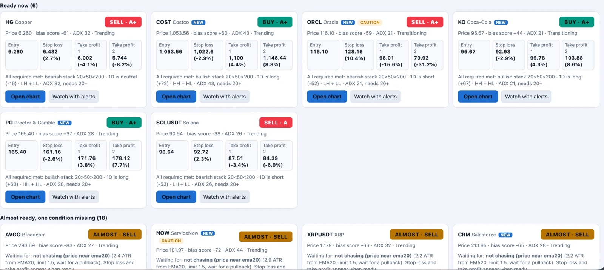

An educator from Malaysia who teaches IGCSE Accounting, Economics and Business Studies, trades the markets with a plan, and builds small tools in her spare time.
8 yrsin education
6+ yrsteaching IGCSE
5 yrsas a business lecturer
Background
Master's and Bachelor's Degree in Business Administration, with a Minor in Mathematics (bachelor's degree only)
Also completed a certificate in Data Analytics
Subjects I teach
IGCSE Accounting
IGCSE Economics
IGCSE Business Studies
What I do outside teaching
Trading
Vibe coding
Experience
The journey, year by year.
Contributions
What I've done.
Every student can improve. They just need someone to find where it breaks.
50%of my students turned into A students, including those who started out failing
99%passing grade
Led students in a university competition, mentoring a team to third place.
Ran entrepreneurship events for the public, which received national media coverage.
Contributions
How I do it.
Find the gap. Diagnose exactly which topics and habits cost marks.
Rebuild understanding. Explain step by step until it makes sense, not just memorised.
Practise with purpose. Past-year topical questions, checked thoroughly.
Exam technique. Timing and mark-scheme thinking, so knowledge turns into grades.
Contributions
Beyond the classroom.
Organised entrepreneurship events for students, which received national media coverage.
Mentored a student project to 3rd place at a university competition.
01 · Trading
Trading.
I treat trading like exam prep: study it, practise it, review it.
How I trade
I trade and analyse on a naked chart: price action only, with no indicators on the screen.
The app I built
I built an app that filters good trades from bad ones. It checks each setup against my rules, so I only act on the trades that pass. Tap the screenshot to see it larger.

A personal approach, not financial advice. Trading involves risk of loss.
02 · Vibe coding
Vibe coding.
When a tool I need does not exist, I describe it, build it with AI, and refine it until it works.
WebsitesTools for teachingTrading helpers
Everything in the Projects folder was made this way:
Learn Islam 101: a free bilingual guide for new and returning Muslims.
mark4you: a marking helper for IGCSE teachers.
TradeDesk: a chart-analysis desk with rule-based checklists and a backtester.